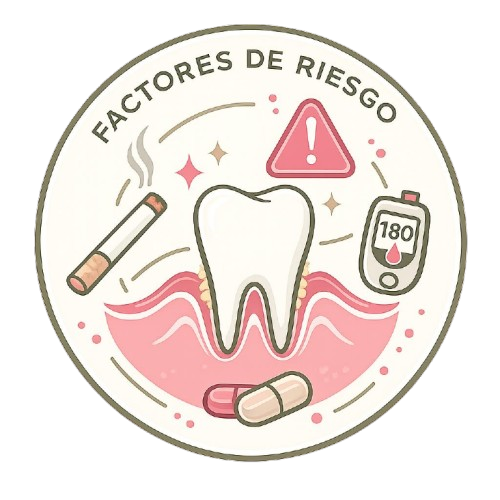

Tema 3
Conoce qué pone en riesgo
la salud de tus encías.
Una guía clara sobre los factores que aumentan el riesgo de enfermedad periodontal, los signos de alerta y cuándo acudir a tu odontólogo.
Lo esencial
- El sangrado gingival no debe considerarse normal.
- La prevención diaria reduce el riesgo de gingivitis y periodontitis.
- El sarro subgingival requiere limpieza profesional.
- La diabetes y el tabaquismo aumentan el riesgo periodontal.
Prevención
Factores de riesgo más importantes
Estos factores pueden favorecer la inflamación, la infección y la pérdida del soporte dental.
Higiene oral deficiente
Permite que las bacterias permanezcan en la superficie dental y el margen gingival, favoreciendo gingivitis, periodontitis y pérdida dental.
Tabaquismo y nicotina
Alteran la circulación de las encías, reducen las defensas y dificultan la cicatrización y la respuesta al tratamiento.
Diabetes
La glucosa mal controlada aumenta la inflamación e infecciones. La relación es bidireccional con la periodontitis.
Dieta
Alta en azúcares y baja en vitaminas y minerales, favorece el crecimiento bacteriano y reduce la reparación de tejidos.
Embarazo
Los cambios hormonales aumentan la sensibilidad de las encías a la placa y pueden producir inflamación y sangrado.
Impacto general
Se asocia con diabetes mal controlada, afecciones cardiovasculares y complicaciones durante el embarazo.
Detección
¿Cómo saber si tengo enfermedad periodontal?
La enfermedad puede avanzar de forma silenciosa. Presta atención a estos signos.
Cambios visibles
- Sangrado gingival: puede aparecer al cepillarse, usar hilo dental o comer.
- Inflamación: encías aumentadas de tamaño o con edema.
- Cambios de color: de rosa coral a rojo intenso.
- Pérdida del aspecto "cáscara de naranja": la encía se ve lisa y brillante.
Señales más avanzadas
- Movilidad dental: puede indicar pérdida del aparato de inserción.
- Migración dental: aparición de espacios o cambio de posición de los dientes.
- Halitosis persistente: mal aliento que no desaparece con higiene habitual.
- Retracción gingival: los dientes parecen más largos.
Importante: el sangrado frecuente, la movilidad dental o la retracción gingival necesitan valoración profesional.
Higiene interdental
Uso correcto del hilo dental
El hilo dental es indispensable para controlar la biopelícula entre los dientes.
Corta aproximadamente 45 cm
Enrolla la mayor parte en los dedos medios y deja entre 3 y 5 cm libres para trabajar.
Introduce el hilo suavemente
Utiliza un movimiento de vaivén para evitar traumatizar la papila interdental.
Forma una "C" alrededor del diente
Abraza la cara proximal del diente e introduce suavemente el hilo dentro del surco gingival.
Desliza de forma controlada
Mueve el hilo desde la encía hacia la superficie oclusal y repite en el diente adyacente.
Frecuencia recomendada: una vez al día. Omitir la higiene interdental favorece la gingivitis localizada entre los dientes.
Complementos
Otros recursos de higiene
La elección depende del espacio interdental, la anatomía y las necesidades de cada persona.
Cepillos interdentales
Útiles en espacios amplios, pérdida de papila, prótesis o pacientes con ortodoncia.
Irrigadores bucales
Utilizan agua a presión para ayudar a remover restos de alimentos y complementar la higiene.
Cepillos unipenacho
Facilitan la limpieza de zonas de difícil acceso, superficies distales y áreas alrededor de aparatos.
Limpiadores linguales
Ayudan a disminuir la carga bacteriana de la lengua y a mejorar el aliento.
Control profesional
Importancia del diagnóstico temprano
Detectar la enfermedad en etapas iniciales puede evitar daño irreversible.
Diagnóstico temprano
Permite identificar gingivitis o periodontitis en estadios iniciales, cuando la pérdida de soporte es mínima o todavía no existe. Esto ayuda a detener la destrucción ósea y prevenir la pérdida dental a largo plazo.
Limpieza profesional
El cálculo dental y la biopelícula subgingival no pueden eliminarse completamente con el cepillado doméstico. Pueden requerir raspado, alisado radicular y mantenimiento periodontal periódico.
Atención odontológica
¿Cuándo acudir al odontólogo o periodoncista?
Cuando aparecen signos de alerta
Sangrado al cepillarse o comer, encías rojas, inflamación, retracción, sensibilidad o halitosis persistente.
Cuando hay pérdida de soporte
Movilidad dental, espacios nuevos entre los dientes o cambios en la forma en que encajan al morder.
Si existe mayor riesgo sistémico
Las personas con diabetes, embarazo o antecedentes familiares de periodontitis avanzada pueden necesitar controles cada 3 a 6 meses.
Antisépticos
Clorhexidina
Es uno de los antisépticos más utilizados en odontología, pero debe emplearse con indicación profesional.
Puede indicarse después de tratamientos periodontales o cirugías durante periodos cortos, generalmente de 7 a 14 días. Tiene un efecto prolongado, pero el uso continuo puede producir manchas dentales, alteración temporal del gusto y acumulación de cálculo.
No debe sustituir el cepillado ni el hilo dental. Utilízala únicamente en la concentración, frecuencia y tiempo indicados por tu odontólogo.
Referencias bibliográficas
- Kinane, D. F., Stathopoulou, P. G., & Papapanou, P. N. (2017). Periodontal diseases. Nature Reviews Disease Primers, 3(1), 1–14. https://doi.org/10.1038/nrdp.2017.38
- Papapanou, P. N., Sanz, M., Buduneli, N., et al. (2018). Periodontitis: Consensus report of workgroup 2 of the 2017 World Workshop. Journal of Periodontology, 89(S1), S173–S182. https://doi.org/10.1002/JPER.17-0721
- Sanz, M., Herrera, D., Kebschull, M., et al. (2020). Treatment of stage I–III periodontitis — The EFP S3 level clinical practice guideline. Journal of Clinical Periodontology, 47(S22), 4–60. https://doi.org/10.1111/jcpe.13290